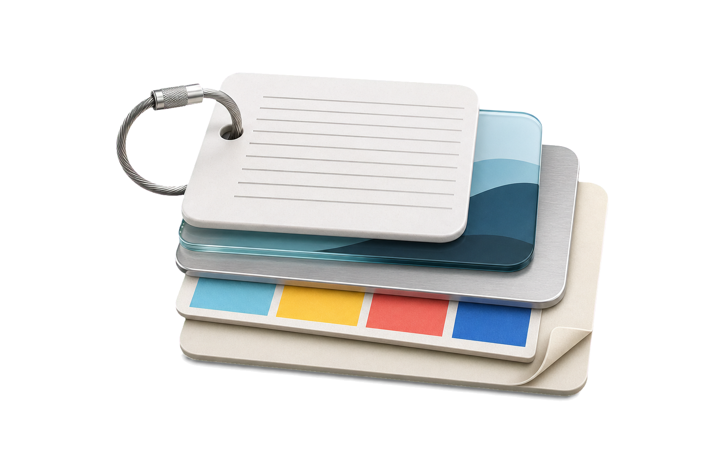
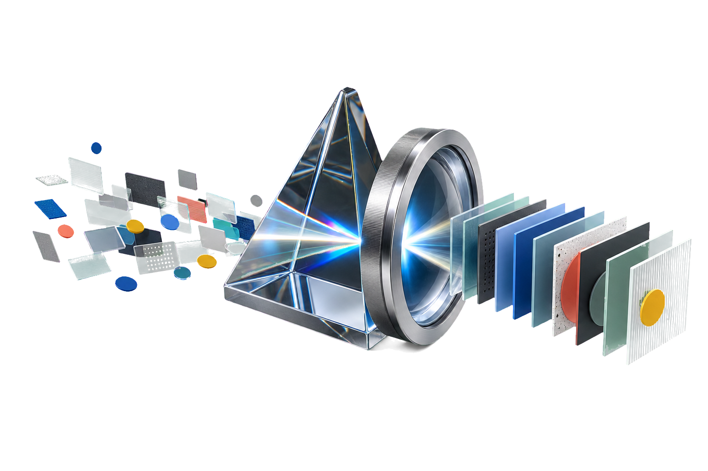
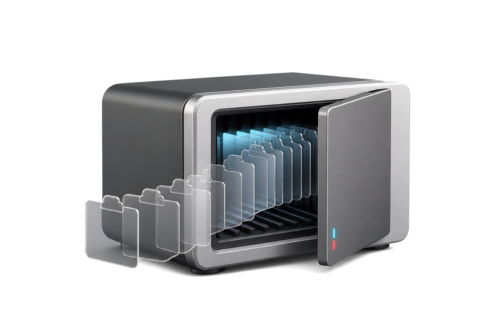

Text
Plain and rich text, ready to scan.
- 01Plain + rich
- 02Readable preview
- 03Snippet ready
Your clipboard, always one shortcut away.
A fast, local-first place for everything you copy. Find it, preview it, and paste it back without breaking your flow.
02One motion away
vPaste stays close without occupying your desktop. Use one shortcut to reveal your history, choose an item, then return to the work in front of you.
03Why keep a clipboard history
The value appears in ordinary moments: something overwritten, a snippet reused, or a file recognized before it goes back.
04One history, many shapes
Text stays readable, images stay visual, links keep their context, and files remain ready to use. vPaste gives each format the treatment it needs.

Plain and rich text, ready to scan.
Visual thumbnails before you paste.
URLs with enough context to recognize.
Swatches and values side by side.
Names, paths, and file identity preserved.

05Search at memory speed
Search across content, group common formats into tabs, and keep favorites close. The interface stays compact even when your history does not.
06Settings, clearly arranged
Choose how vPaste behaves, protects history, manages local data, and responds to the keyboard.
07Local means local
Your history stays on the current device for everyday use. When you change computers, export a complete archive and import it into another vPaste installation.

08Open by default
vPaste is developed under GPL-3.0 with a local-first architecture and equal attention to Windows and macOS.
The next thing you copy is already useful.